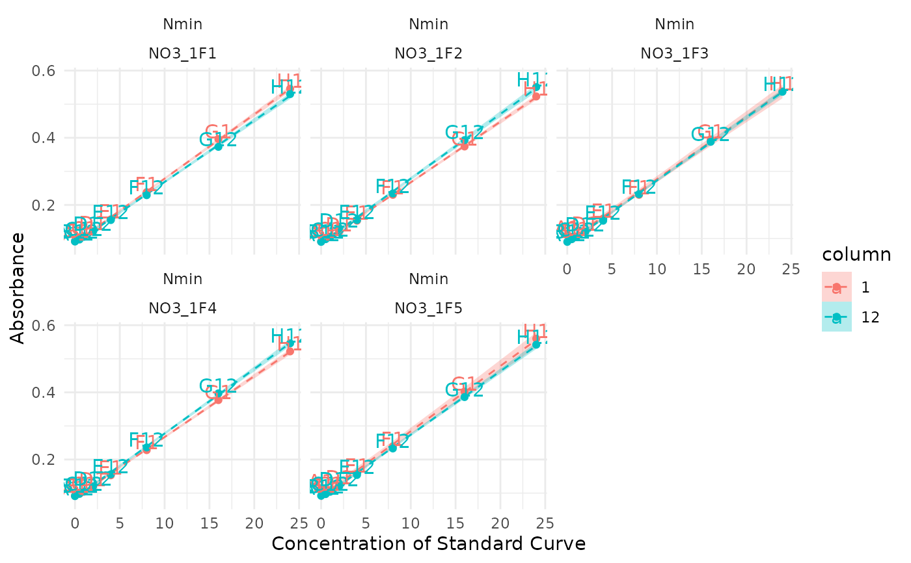

Plots raw absorbance (y-axis) vs concentration (x-axis), grouping the data by plate_id.
Uses the ggplot2 package.
Arguments
- std_data
The table containing the data to be plotted. Must contain the columns
std_conc,abs,plate_idandwell_id. If the plot shows too many curves, consider filtering the input data frame or adding a ggplot layer to facet (see?facet_wrap()or?facet_grid()).- through_origin
Whether the smooth curve should be constrained to go through the origin. Default to TRUE, which only makes sense for absorbance data that has already been blank-corrected
- model
Which model to use for the smooth curve. Accepts either
linear(default) orpolyfor polynomial model (y = ax + bx^2 + c, with c = 0 ifthrough_origin = TRUE)
Examples
raw_meta <- tidy_plates |>
dplyr::left_join(metadata, by = dplyr::join_by(dataset,plate_id))
curve_concentration <- extract_curve(metadata)
std_data <- raw_meta |>
extract_std_data() |>
dplyr::select(!std_conc) |>
dplyr::left_join(curve_concentration, by = dplyr::join_by(row, dataset, plate_id))
plot_std(std_data, through_origin = FALSE, model = "linear") + ggplot2::facet_wrap(dataset~plate_id)
